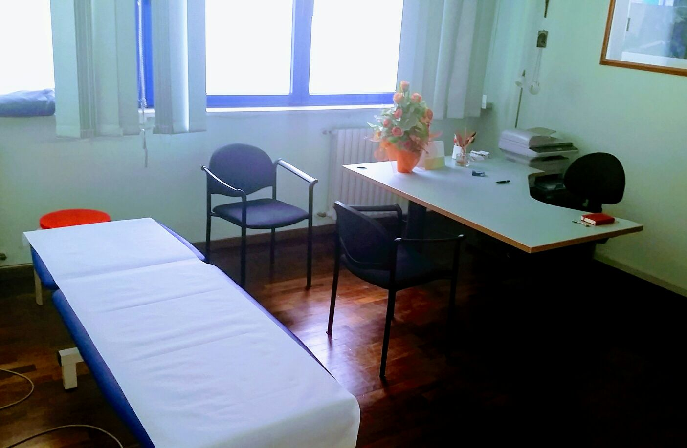
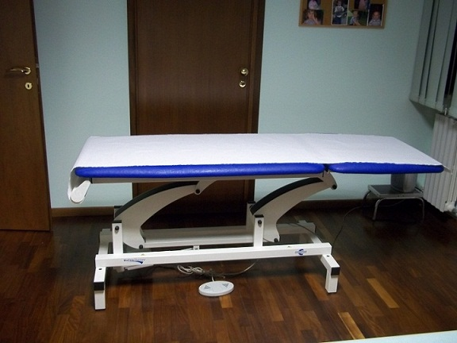
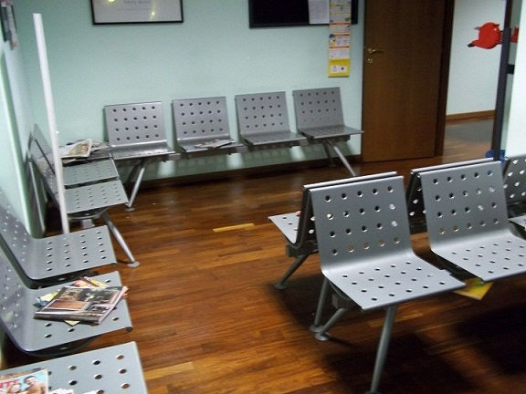
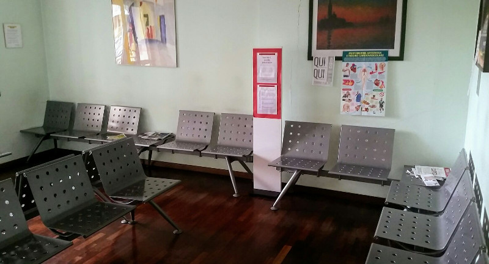
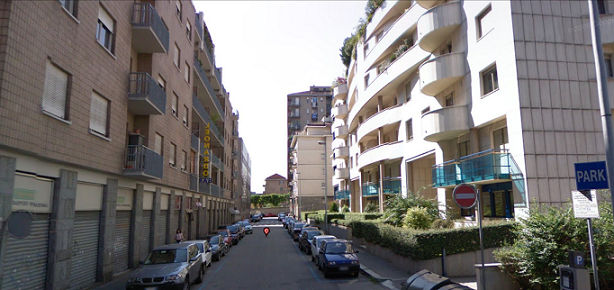
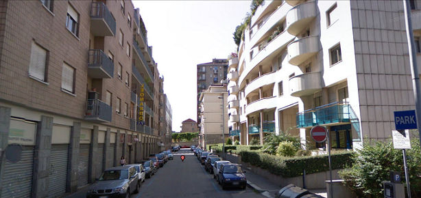

Servizi
Lo studio offre tutti i servizi di fisioterapia, in particolare:
Contatti
Collaborazioni
Chi è il Fisioterapista?
Il Fisioterapista è un professionista della Sanità in possesso del diploma di Laurea o titolo equipollente, che lavora, sia in collaborazione con il Medico e le altre professioni sanitarie, sia autonomamente, in rapporto con la persona assistita, valutando e trattando le disfunzioni presenti nelle aeree della motricità, delle funzioni corticali superiori e viscerali conseguenti ad eventi patologici, a varia eziologia, congenita o acquisita.
Secondo il D.M. 741/94 il Fisioterapista:
- elabora, anche in équipe multidisciplinare, la definizione del programma di riabilitazione volto all'individuazione ed al superamento del bisogno di salute del disabile
- pratica autonomamente attività terapeutica per la rieducazione funzionale delle disabilità motorie, psicomotorie e cognitive utilizzando terapie fisiche, manuali, massoterapiche e occupazionali
- propone l'adozione di protesi ed ausili, ne addestra all'uso e ne verifica l'efficacia
- verifica le rispondenze della metodologia riabilitativa attuata agli obiettivi di recupero funzionale
- svolge attività di studio, didattica e consulenza professionale, nei servizi sanitari ed in quelli dove si richiedono le sue competenze professionali
- svolge la sua attività professionale in strutture sanitarie pubbliche e private in regime di dipendenza o libero-professionale
Terapia manuale ortopedica
La Terapia Manuale Ortopedica prevede, in prima seduta, una approfondita valutazione clinica per ricercare le cause primarie che hanno portato il paziente a rivolgersi al fisioterapista. È in grado di stabilire lo stato di mobilità delle articolazioni e i cambiamenti tissutali che hanno condotto a sviluppare disfunzioni e porre in atto l’adeguato trattamento. La terapia manuale trova indicazione in qualsiasi patologia dell’apparato locomotore. Insegnare al Paziente a prendere coscienza del suo fisico e apportare i cambiamenti necessari alle sue attività quotidiane è importante quanto le tecniche manuali utilizzate.
Rieducazione posturale
La Rieducazione Posturale è una metodica specifica che consta di una serie di tecniche di terapia manuale e di esercizi atti a riequilibrare le tensioni muscolo-legamentose del corpo.
In particolar modo, tramite un lavoro globale sul corpo, agisce sia sulle zone più rigide e retratte, sia nelle zone ipermobili (mancato controllo motorio ) che, nel tempo, possono causare errati compensi e dolore.
Trattamenti specifici per cefalea miotensiva e cervicogenica
La Cefalea Cervicogenica rappresenta il 15-20% di tutti i mal di testa benigni ricorrenti, con una prevalenza che va dal 0.4% al 80%. Il rapporto donne/uomini è 4:1 cioè le donne hanno 4 volte in più degli uomini la possibilità di essere vittime di questo problema.
La Cefalea Cervicogenica è una forma di cefalea secondaria cioè è causata da una disfunzione cervicale in particolare delle articolazioni delle prime 3 vertebre cervicali, ma anche segmenti inferiori possono contribuire alla sua genesi e per questo motivo è una problematica di pertinenza squisitamente fisioterapica.
E’ stato dimostrato ed oggi è sempre più accettato che problemi articolari o muscolari, trigger points miofasciali, a livello cervicale o mandibolare sono fattori che possono avere un ruolo chiave nello sviluppo e nel mantenimento del mal di testa. Per questo motivo cresce l’interesse generale verso l’attività di fisioterapisti specializzati in queste problematiche, nonché la ricerca clinica in questo campo.
Rieducazione Vestibolare
La riabilitazione vestibolare è un complesso di tecniche, sia manuali, sia basate su esercizi fisici guidati da un fisioterapista, che mirano al recupero delle funzioni deficitarie (vertigini, sensazione di disequilibrio), attraverso la stimolazione di meccanismi neurofisiologici coinvolti nel recupero funzionale di una lesione vestibolare.
Per vertigine si intende una sensazione soggettiva sgradevole, più o meno grave, di instabilità rispetto all’ambiente.
L’equilibrio è il risultato di uno scambio permanente tra sistemi che informano il cervello della posizione del corpo nello spazio: sistema vestibolare, propriocettivo e visivo. Una vertigine o un disequilibrio si manifesta in caso di informazioni discordanti provenienti da uno di questi tre sistemi.
La riabilitazione vestibolare utilizza strategie adattative, sostitutive e di abitudine, isolatamente o in modo complementare, per ridurre un compenso quando non vi sia stato spontaneamente.
Rieducazione cranio-temporo-mandibolare
Chi è affetto da una disfunzione del sistema cranio- temporo -mandibolare può trovare in questa riabilitazione specialistica un'ottima soluzione per risolvere il proprio problema.
La Rieducazione cranio- temporo- mandibolare consiste in una serie di interventi terapeutici eseguiti da un fisioterapista, che hanno lo scopo di individuare la disfunzione all’ATM, e intervenire e rieducare con manovre specifiche oltre a consigliare una serie di esercizi mirati per il mantenimento dei risultati terapeutici ottenuti.
Riabilitazione e rieducazione
Prevede l'applicazione di un numero di sedute variabile in relazione alla gravità del problema manifestato e alla capacità di guarigione intrinseca di ogni soggetto.
Al termine di questa fase il soggetto può riprendere l'attività lavorativa quotidiana con estrema sicurezza.
Per la ripresa dell'attività sportiva è consigliato un periodo di rieducazione sport-specifica e ri-atletizzazione.
Tipi di riabilitazione praticata in studio:
Fisiokinesiterapia
Il termine kinesi deriva dal greco "Kinesis" e significa movimento.
Quando il terapista muove un segmento corporeo del paziente si parla di Kinesi passiva, se il paziente muove attivamente un arto e il terapista lo aiuta, sostenendone in parte il peso, parliamo di Kinesi attivo-assistita.
È un trattamento individuale. L'obiettivo è quello di facilitare il recupero della corretta ampiezza articolare di una o più articolazioni.
A COSA SERVE
In seguito ad un trauma, un intervento chirurgico, una immobilizzazione prolungata (gesso, tutori etc.) un'articolazione può perdere la capacità di muoversi nei i suoi piani fisiologici per una riduzione di elasticità tissutale.
Attraverso varie tecniche, il terapista mobilizza le articolazioni coinvolte nella limitazione cercando, attraverso un lavoro graduale, di far riacquistare al paziente la maggior mobilità consentita.
Durante il trattamento il terapista utilizza pompage articolari e muscolari, de-coaptazioni articolari, facilitazioni neuro-muscolari, massaggio; a seconda della patologia o del tipo di intervento chirurgico. Vengono strettamente rispettati i tempi biologici di guarigione; durante tutto il trattamento si lavora sotto soglia algica, ossia senza far percepire dolore.
Questo tipo di trattamento è parte integrante di un programma riabilitativo più ampio in cui alla mobilizzazione passiva e attivo-assistita vengono associate, rispettando modalità e tempi, riabilitazione e rieducazione sia in acqua che a secco.
Le sedute hanno una durata di circa 30 minuti e, a seconda del programma definito, la frequenza può variare da una a più volte la settimana.
Bendaggio funzionale
Il bendaggio funzionale è un tipo di fasciatura dinamica, che fornisce cioè un'immobilizzazione parziali: non impedisce il fisiologico movimento di un'articolazione ma arresta qualsiasi forza che possa causare un danno alla struttura che vogliamo proteggere.
Rappresenta un'evoluzione ponendosi tra le fasciature semplicemente contenitive e quelle rigide, rispetto alle quali presenta il vantaggio di non causare ipotrofie muscolari e di conservare il coordinamento tra il segmento sano e quello leso.
Utilizzando bende adesive di vario tipo, elastiche e non, mira a costruire un supporto esterno atto a rinforzare un'articolazione, sia immediatamente dopo un trauma che a distanza, quando questa risulti deficitaria. Può essere utilizzato anche in un arto normale quando questo viene sottoposto come nell'attività sportiva, a sforzi eccessivi e quindi potenzialmente lesi.
Il bendaggio funzionale ha perciò:
- AZIONE MECCANICA DI CONTENZIONE
- AZIONE ESTEROCETTIVA (la benda perfettamente aderente alla cute trasmette il movimento a tutte le strutture sottostanti stimolando i recettori del movimento ed allertando gli stabilizzatori dinamici muscolari che vengono così allenati ad intervenire prontamente in difesa delle strutture capsule - legamentose)
- AZIONE PSICOLOGICA (sicurezza)
Riabilitazione neurologica
La riabilitazione neurologica è consigliata in tutti gli esiti di:
- disordini del sistema nervoso centrale
- Paralisi pseudo-bulbare progressiva
- ictus
- atassia
- emorragie cerebrali
- sindromi cerebellari
- Morbo di Parkinson
- sindromi piramidali ed extrapiramidali
L’obiettivo dell'intervento riabilitativo è quello di raggiungere il livello di autonomia più alto possibile nelle fasi acute e sub-acute (fino ad 1 anno circa dall'evento), di mantenere e consolidare i risultati raggiunti nel periodo successivo.
Nella riabilitazione neurologica la cosa più importante è partire con la costruzione di un progetto a lungo termine e un programma giornaliero.
Gli obiettivi da perseguire sono:
- Raggiungere il livello di autonomia più alto possibile nelle fasi acute e sub-acute
- Reinserimento nella vita sociale
- Proseguire e consolidare i risultati raggiunti
Studi e formazione
1999 Maturità Scientifica presso liceo scientifico E. Majorana di Moncalieri.
2003 Laurea con lode in Fisioterapia presso l’Università degli studi di Torino.
Formazione specialistica
Formazione specialistica post-laurea in terapia manuale e riabilitazione dei disturbi neuro-muscolo-scheletrici frequentando i seguenti corsi:
2004 Siena. Corso di medicina ortopedica Cyriax, docente Dr. Dirk Lammertijn-O.M.I.Global-Brussels per un totale di 102 ore di formazione teorico-pratica.
2006 Roma. Corso Maitland, docente Dr.in ft. Robert Valentiny, riconosciuto dall’ I.M.T.A. per la ricerca, l’analisi e la terapia di lesioni neuro-muscolo-scheletriche secondo il concetto Maitland per un totale di 160 ore di formazione teorico-pratica.
2007 Milano. Corso Mulligan, docente Dr.in ft. Stefano Serrecchia, riconosciuto dalla Mulligan Teacher Association con una frequenza di 32 ore di teoria e pratica.
2007 Torino. Corso N.O.I. Mobilizzazione del sistema nervoso, docente Prof. Dr. Harry J.M. von Piekartz, per diagnosi e gestione terapeutica delle disfunzioni fisiche del sistema nervoso nel contesto della scienza del dolore e del ragionamento clinico per un totale di 23 ore di formazione teorico-pratica.
2009 Iseo(Bs). Corso di Orthopedic Manipulative Therapy of the O.M.T. Kaltenborn-Evjenth Concept, docente Dr. Jochen Schomacher, per diagnosi, pianificazione, trattamento e rivalutazione delle disfunzioni del sistema artro-neuro-muscolare per un totale di 237 ore di formazione teorico-pratica.
2010 Albenga(Sv). Corso C.R.A.F.T.A. di Valutazione, Trattamento e Gestione delle Disfunzioni del sistema Cranio-mandibolare e Cranio-facciale, Docente Prof. Dr. Harry J.M. Von Piekartz, per un totale di 80 ore di formazione teorico-pratica.
2012 Padova. Corso di Advanced Orthopedic Manipulative Therapy of the O.M.T. Kaltenborn-Evjenth Concept (II livello), docente Dr. Jochen Schomacher, per diagnosi, pianificazione, trattamento e rivalutazione delle disfunzioni del sistema arto-neuro-muscolare per un totale di 100 ore di formazione teorico-pratica.
2013 Milano. Corso di Terapia Manuale Trigger Point Miofasciale, docente Adriano Di Giacomo, per un totale di 22 ore di formazione teorico-pratica.
2013 Milano. Corso di Manipolazione a leva corta di rachide cervicale, toracico e lombare, docente Prof. Daryl Herbert, per un totale di 17 ore di formazion teorico-pratica.
2014 Milano. Corso di formazione Plantari Vasyli.
2014 Torino. Corso di Management of neck pain disorders, docente Prof.ssa Deborah Falla per un totale di 22 ore di formazione teorico- pratica.
2015 Milano. Corso di Manipolazioni Vertebrali, docente Marco Barbero per un totale di 25 ore di formazione teorico -pratica.
2015 Padova. Rieducazione vestibolare e delle vertigini di origine periferica, docente Jeanluc Saignez per un totale di 24 ore di formazione teorico-pratica.
2016 Treviso. Rieducazione vestibolare: vertigine posizionale e capogiro, docenti Richard Clendaniel, Neil Shepard, Laura Morris per un totale di 26 ore di formazione teorico-pratica.
2017 Savona. Il processo diagnostico ed il trattamento del tratto lombopelvico, docente Andry Vleeming per un totale di di 24 ore di formazione teorico-pratica.
Esperienze professionali
Dal 2003 libero-professionista presso lo studio medico-fisioterapico Chiros Via Vittorio Amedeo II 8 Torino.
Dal 2007 libero-professionista per la fondazione Don Gnocchi Torino.
Dal 2008 libero-professionista presso lo studio medico Cerati-Palazzo Via Ludovico Muratori 34 Torino.
Dal 2009 Consulente fisioterapista presso lo studio M.T.I. Via San Secondo 72 Torino.
Studio Via Muratori
   
 
